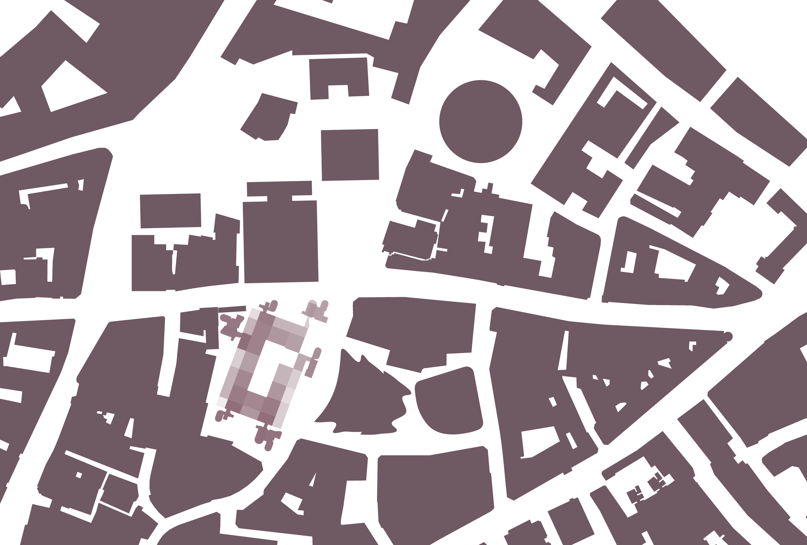
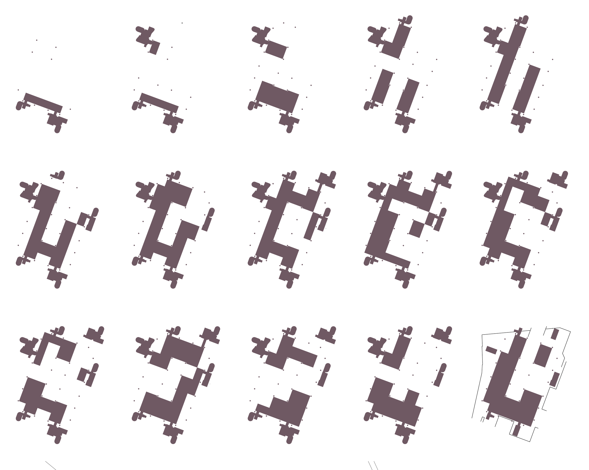
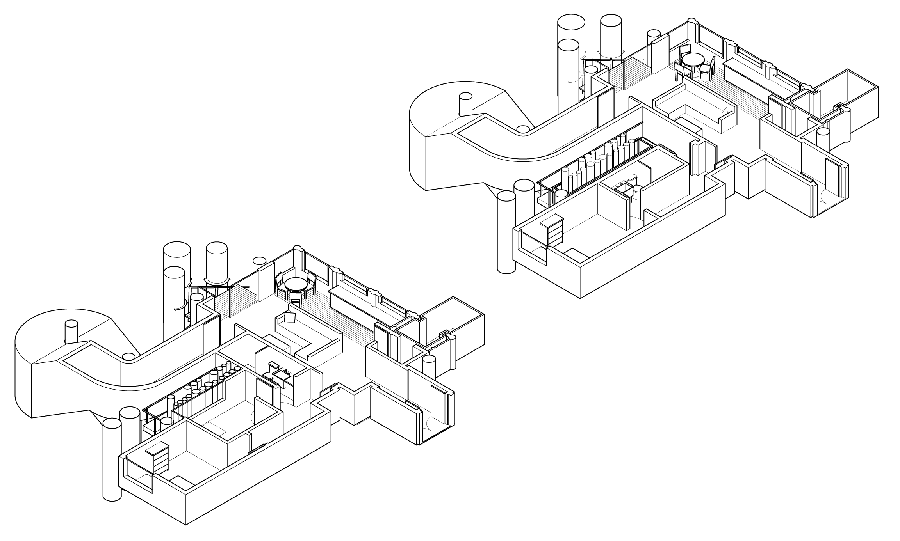
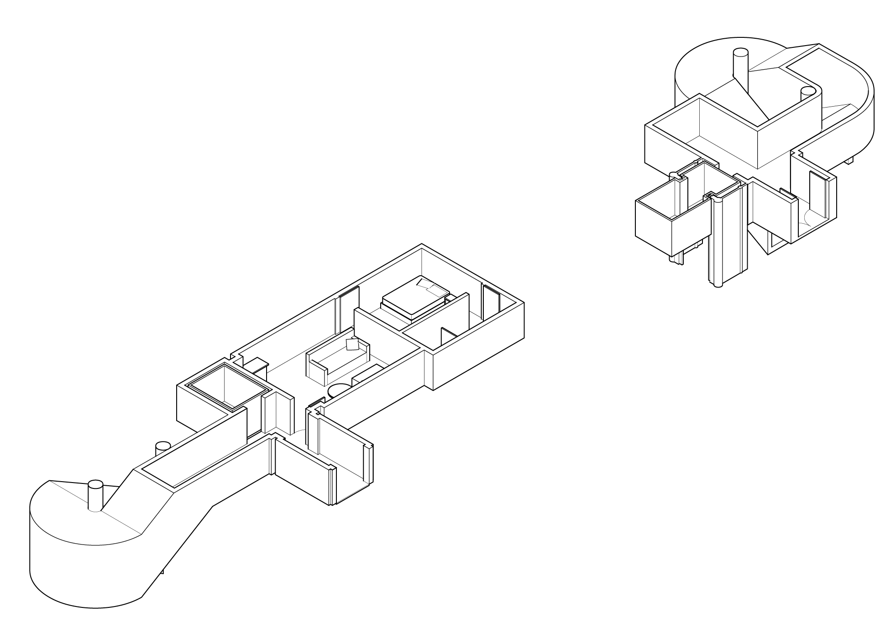
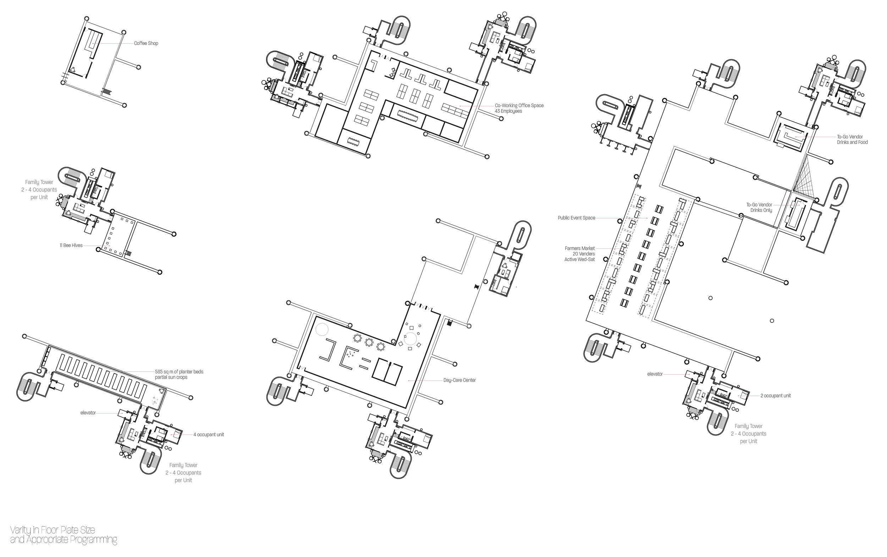
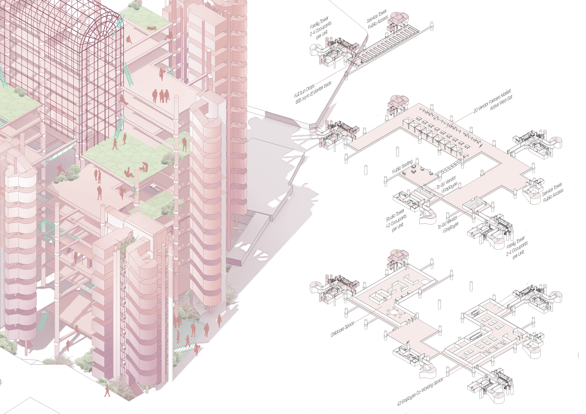
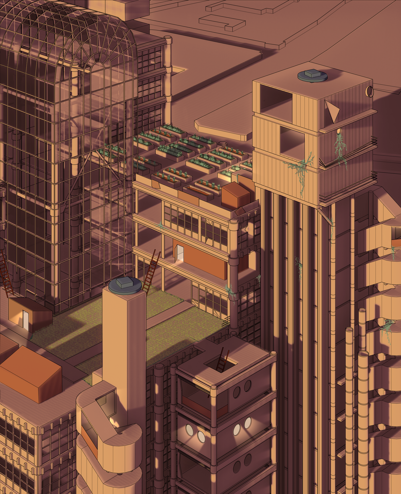

Lloyds: Erosion and Reoccupation

Lloyds: Erosion and Reoccupation was the studio's third project centered around Lloyd's of London. The first involved a group of 6 students creating a 1:50 scale model of Lloyds, to allow us to become familiar with the building's massing, patterns, and details. The second project had groups of 3 look at the potential ways Lloyds could be deconstructed. This final individual project hypothesized how Lloyds might evolve in the cycle of destruction and reuse.

Erosion
Using figure ground studies, the floor plates are eroded with a bias towards the North-East, in order to provide a front door to the public, while also breaking up the monotony of space in the existing plan.
This shift from a high security building to a public abandoned building drives the push for Lloyds to open up, inadvertently creating an informal but welcoming entry.
Reoccupation
With Lloyds now abandoned and partially picked away, reoccupation begins. London's increasing housing needs drives the re-inhabitation, which begins with the occupation of the towers. Various tower units are converted to family and single units, while maintaining two public access towers.


Floor plates are then occupied by program appropriate by location and size, to support the residents.


I later revisited this project, with an interest in trying out new rendering styles - modeling in SketchUp, rendering shadows and initial transparency in Twinmotion, and colorizing, editing, and drawing entourage and lighting in Procreate.
